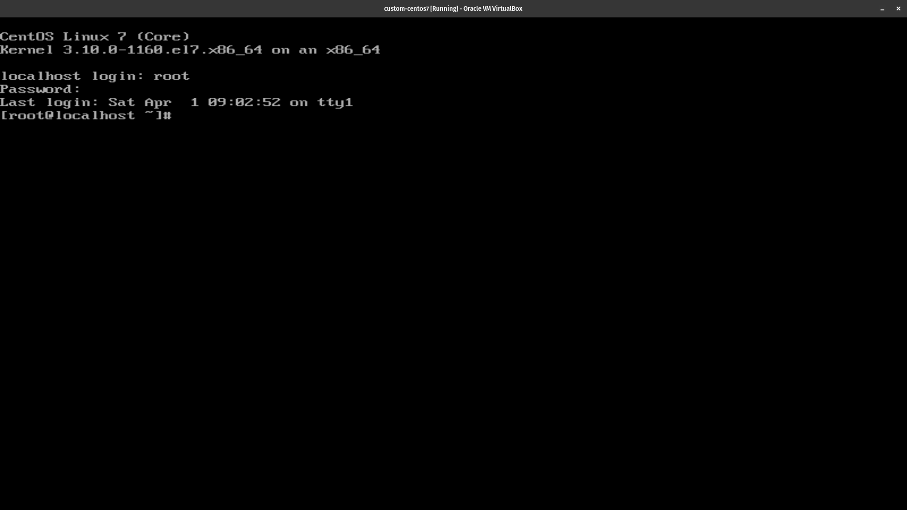
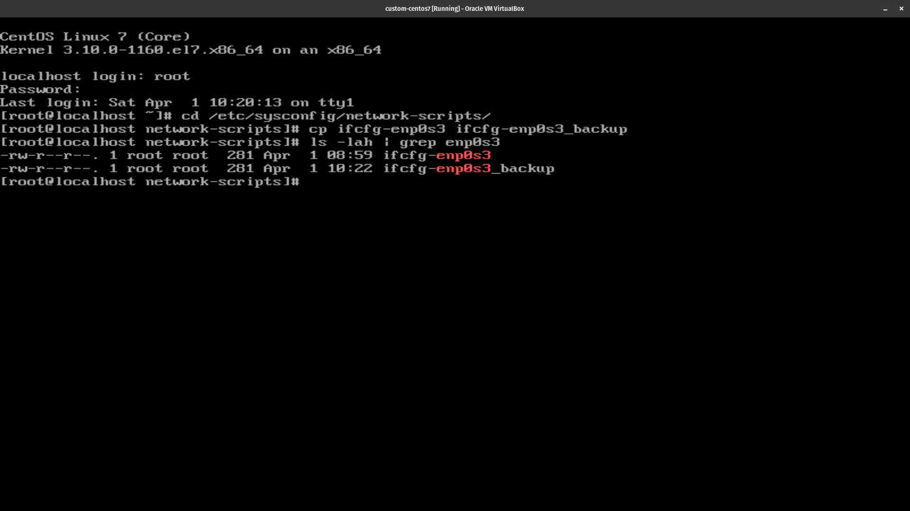
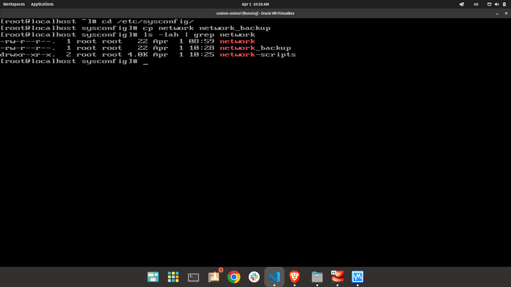
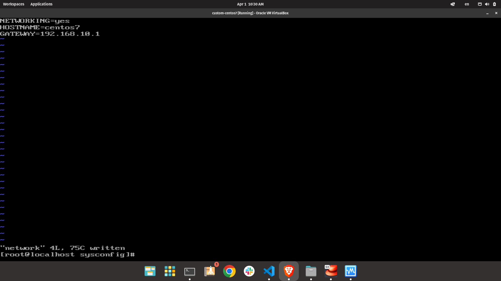
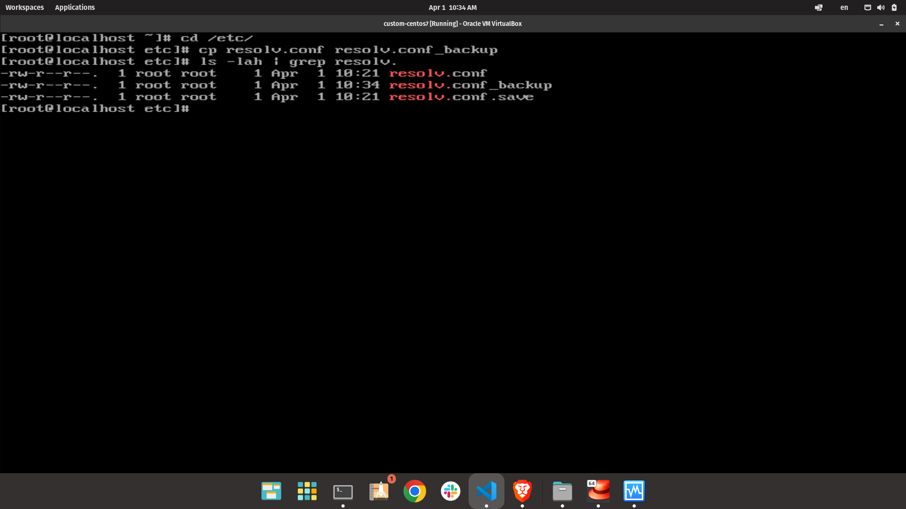
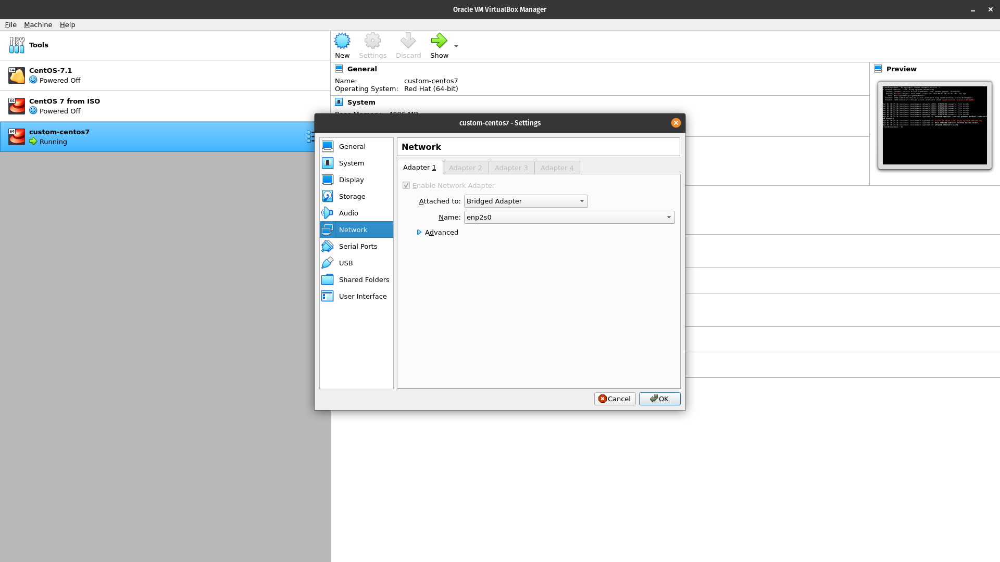
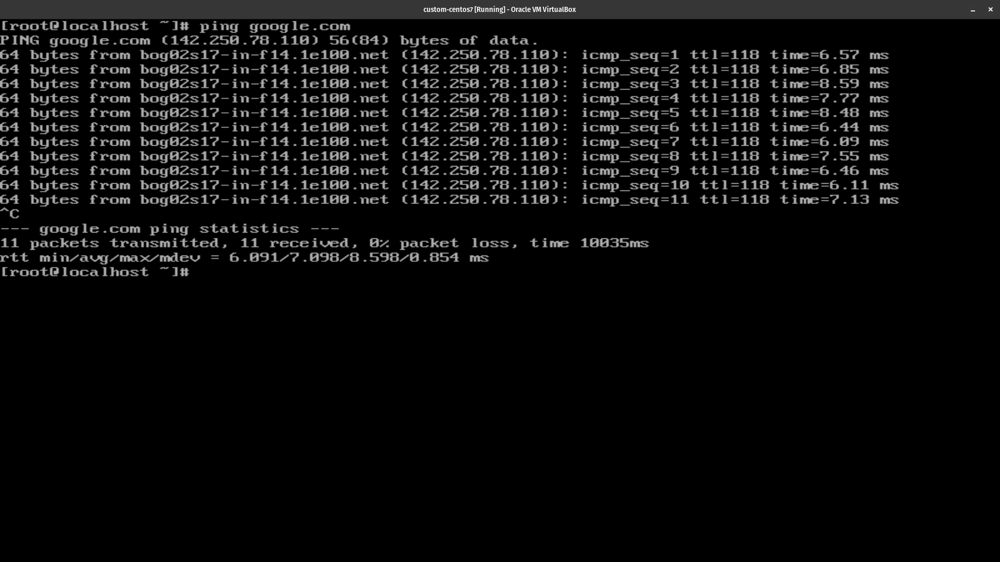
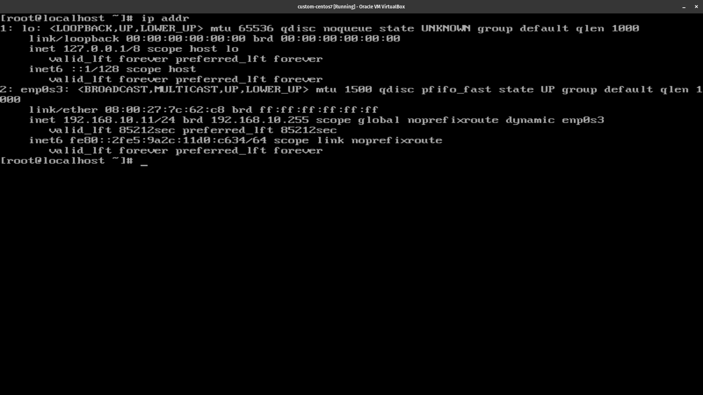

Index
Conexion a Internet de una maquina virtual en CentOS 7
Enciende tu marquina virtual e inicia sesión como root.

Desde aca, vamos al siguiente directorio:
cd /etc/sysconfig/network-scripts
En este punto debemos ajustar la configuracion de la interfaz de la tarjeta de red que usaremos para conectarnos. En mi caso es la enp0s3.
Primero vamos a hacer un backup de nuevo archivo ifcfg-enp0s3, ejecutando el siguiente comando:
cp ifcfg-enp0s3 ifcfg-enp0s3._backup
Para verificar que el backup fue creado correctamente ejecutamos el siguiente comando:
ls -lah | grep ifcfg-enp0s3

Ahora que tenemos el backup, vamos a editar el archivo ifcfg-enp0s3 ejecutando:
vi ifcfg-enp0s3
Actualiza las siguientes lineas:
ONBOOT=yes
Ahora, vamos a configurar la puerta de enlace en el archivo /etc/sysconfig/network. Para hacerlo ejecutamos:
cd /etc/sysconfig
Nos aseguramos de hacer un backup de nuestro archivo network, ejecutando:
cp network network_backup
Para verificar que el backup fue creado correctamente ejecutamos el siguiente comando:
ls -lah | grep network

Ahora agreamos algunas lineas al archivo network:
vi network
Debe ser un archivo vacio, agregamos las siguientes lineas:
NETWORKING=yes
HOSTNAME=centos7
GATEWAY=192.168.10.1
Deberia quedar coi algo como esto:

El valor de GATEWAY es la puerta de enlace de tu maquina host. En este caso, es 192.168.10.1.
Ahora vamos a configurar el name servers en el archivo /etc/resolv.conf. Para ir a la carpeta ejecutamos:
cd /etc
Como siempre, hacemos un backup del archivo resolv.conf ejecutando:
cp resolv.conf resolv.conf_backup
Para verificar que el backup fue creado correctamente ejecutamos el siguiente comando:
ls -lah | grep resolv.conf

Ahora agregamos algunas lineas al archivo resolv.conf:
vi resolv.conf
Inicialmente debe ser un archivo vacio, agregamos las siguientes lineas:
nameserver 8.8.8.8
nameserver 8.8.4.4
Antes de continuar tenemos que asegurarnos que nuestra maquina virtual tiene el adaptador de red configurado correctamente. En este caso estamos usando el adaptador NAT Network Adapter. Si tienes que configurarlo y tu maquina virtual esta encendida, tienes que reiniciarla.

Ya casi estamos. Nos aseguramos de reiniciar el servicio de red ejecutando:
systemctl restart network
Ahora, vamos a probar nuestra conexion a internet ejecutando:
ping google.com

Notas
Si quieres saber cual es la ip de tu maquina virtual, ejecuta:
ip addr
